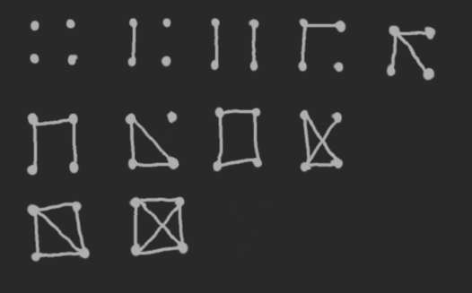

Zadanie 1
Niech G G G G G G G ‾ \overline{G} G G G G G G G G G G G ‾ \overline{G} G
Jeśli G G G done .
Oth
Weźmy trójkę wierzchołków v , w , z v, w, z v , w , z G G G v v v w w w z z z v v v w w w
W dopełnieniu G ‾ \overline{G} G v v v w w w v v v z z z w w w z z z
Wówczas nadal mamy połączenie pomiędzy v v v w w w z z z
G G G
<img width="256px" src="graphs/l1z1.png"/>G ‾ \overline{G} G
<img width="256px" src="graphs/l1z1c.png"/>1’.
Załóżmy, że G G G ( ∃ a , b ∈ V ) : ¬ a ∼ G b (\exists{a,b\in{V}}): \neg{a \sim_G b} ( ∃ a , b ∈ V ) : ¬ a ∼ G b
Weźmy dowolne c ∈ V c \in V c ∈ V ¬ ( a ∼ G c ∧ c ∼ G b ) \neg{(a \sim_G c \land c \sim_G b)} ¬ ( a ∼ G c ∧ c ∼ G b ) ( ¬ ( a ∼ G c ) ∨ ¬ ( c ∼ G b ) ) ( \neg(a \sim_G c) \lor \neg(c \sim_G b) ) ( ¬ ( a ∼ G c ) ∨ ¬ ( c ∼ G b ) )
Analogicznie dla dowolnego d ∈ V d \in V d ∈ V
Albo jest tak, że ( ¬ ( a ∼ G c ) ∨ ¬ ( a ∼ G d ) ) ( \neg(a \sim_G c) \lor \neg(a \sim_G d) ) ( ¬ ( a ∼ G c ) ∨ ¬ ( a ∼ G d ) ) ( ¬ ( b ∼ G c ) ∨ ¬ ( b ∼ G d ) ) ( \neg(b \sim_G c) \lor \neg(b \sim_G d) ) ( ¬ ( b ∼ G c ) ∨ ¬ ( b ∼ G d ) ) a , b a,b a , b c c c d d d
Wtedy w każdym przypadku c ∼ G ‾ d c \sim_{\overline{G}} d c ∼ G d
Przykładowym grafem G G G G G G G ‾ \overline{G} G C 4 C_4 C 4
Zadanie 2
Niech G = ( V , E ) G = (V, E) G = ( V , E ) ∣ E ∣ > ( ∣ V ∣ − 1 2 ) |E| > \binom{|V|−1}{2} ∣ E ∣ > ( 2 ∣ V ∣ − 1 ) Pokaż, że G jest grafem spójnym.
Udowodnimy, że graf G ‾ \overline{G} G
Niech ∣ V ∣ = n |V| = n ∣ V ∣ = n G G G ∣ E ∣ > ( n − 1 2 ) |E| > \binom{n-1}{2} ∣ E ∣ > ( 2 n − 1 )
Wówczas w grafie G ‾ = ( V , E ′ ) \overline{G} = (V,E') G = ( V , E ′ ) E ′ = ( n 2 ) − ∣ E ∣ < ( n 2 ) − ( n − 1 2 ) = = n ⋅ ( n − 1 ) 2 − ( n − 1 ) ( n − 2 ) 2 = = 1 2 ( ( n − 1 ) ⋅ ( n − ( n − 2 ) ) ) = = 1 2 ( ( n − 1 ) ⋅ 2 ) = = n − 1
E' = \binom{n}{2} - |E| < \binom{n}{2} - \binom{n-1}{2} =
\\
= \frac{n\cdot (n-1)}{2} - \frac{(n-1)(n-2)}{2} =
\\
= \frac{1}{2}((n-1) \cdot (n - (n-2))) =
\\
= \frac{1}{2}((n-1) \cdot 2) =
\\
= n-1
E ′ = ( 2 n ) − ∣ E ∣ < ( 2 n ) − ( 2 n − 1 ) = = 2 n ⋅ ( n − 1 ) − 2 ( n − 1 ) ( n − 2 ) = = 2 1 ( ( n − 1 ) ⋅ ( n − ( n − 2 ) ) ) = = 2 1 ( ( n − 1 ) ⋅ 2 ) = = n − 1 G ‾ \overline{G} G G G G zadania pierwszego .
Zadanie 3
Pokaż, że w każdym grafie prostym o co najmniej dwóch wierzchołkach są dwa wierzchołki o takim samym rzędzie.
n = ∣ V ∣ n = |V| n = ∣ V ∣ ( ∀ v ∈ V : 0 ≤ d e g ( v ) ≤ n − 1 ) ( \forall{v\in{V}}: 0 \le deg(v) \le n-1 ) ( ∀ v ∈ V : 0 ≤ d e g ( v ) ≤ n − 1 ) ∃ v 0 : d e g ( v 0 ) = 0 ⟹ ¬ ∃ v 1 : d e g ( v 1 ) = n − 1 \exists{v_0}: deg(v_0) = 0 \implies \neg\exists{v_1}: deg(v_1) = n-1 ∃ v 0 : d e g ( v 0 ) = 0 ⟹ ¬ ∃ v 1 : d e g ( v 1 ) = n − 1
Case #2:¬ ∃ v ∈ V : deg ( v ) = 0 ⟹ ∀ v ∈ V : deg : V → { 1 , … , n − 1 } \neg\exists v\in V: \deg(v) = 0 \implies \forall v \in V: \deg: V \to \{1,\dots,n-1\} ¬ ∃ v ∈ V : deg ( v ) = 0 ⟹ ∀ v ∈ V : deg : V → { 1 , … , n − 1 }
Więcej wierzchołków niż rzędów bo Dirichlet (pigeon principle).
Zadanie 4
Pokaż, że graf cykliczny C n C_n C n n n n
V = { v 0 , v 1 , . . . , v n − 1 } V = \{ v_0, v_1, ..., v_{n-1} \} V = { v 0 , v 1 , . . . , v n − 1 } V 1 ∪ ˙ V 2 = V V_1 \dot{\cup} V_2 = V V 1 ∪ ˙ V 2 = V E = { e 0 , e 1 , . . . , e n − 1 } E = \{ e_0, e_1, ..., e_{n-1} \} E = { e 0 , e 1 , . . . , e n − 1 }
φ ( e k ) = { ( v k , v k + 1 ) : k < n − 1 ( v n − 1 , v 0 ) : k = n − 1 \varphi(e_k) =
\begin{cases}
(v_k, v_{k+1}): k < n-1\\
(v_{n-1}, v_0): k = n-1
\end{cases}
φ ( e k ) = { ( v k , v k + 1 ) : k < n − 1 ( v n − 1 , v 0 ) : k = n − 1
v n − 1 ∉ V 1 v_{n-1} \notin V_1 v n − 1 ∈ / V 1
¬ ( ∃ k < n : φ ( e k ) = ( v , w ) ∧ ( v ∈ V 1 ∧ w ∈ V 1 ) ∨ ( v ∈ V 2 ∧ w ∈ V 2 ) ) \neg\big(\exists{k<n}: \varphi(e_k) = (v, w) \land \left( v \in V_1 \land w \in V_1\right) \lor \left( v \in V_2 \land w \in V_2 \right) \big) ¬ ( ∃ k < n : φ ( e k ) = ( v , w ) ∧ ( v ∈ V 1 ∧ w ∈ V 1 ) ∨ ( v ∈ V 2 ∧ w ∈ V 2 ) )
¬ ( ∃ k : n − 1 = 2 k ) ≡ 2 ∤ ( n − 1 ) \neg(\exists{k}: n-1 = 2k) \equiv 2 \not{\lvert}~(n-1) ¬ ( ∃ k : n − 1 = 2 k ) ≡ 2 ∣ ( n − 1 )
¬ ( ∃ k < n : φ ( e k ) = ( v , w ) ∧ ( v ∈ V 1 ∧ w ∈ V 1 ) ∨ ( v ∈ V 2 ∧ w ∈ V 2 ) ) \neg\big(\exists{k<n}: \varphi(e_k) = (v, w) \land ( v \in V_1 \land w \in V_1 ) \lor ( v \in V_2 \land w \in V_2 ) \big) ¬ ( ∃ k < n : φ ( e k ) = ( v , w ) ∧ ( v ∈ V 1 ∧ w ∈ V 1 ) ∨ ( v ∈ V 2 ∧ w ∈ V 2 ) )
v 0 ∈ V 1 ⟹ v 1 ∈ V 2 ⟹ v 2 k ∈ V 1 ∧ v 1 + 2 k ∈ V 2 v_0 \in V_1 \implies v_1 \in V_2 \implies v_{2k} \in V_1 \land v_{1+2k} \in V_2 v 0 ∈ V 1 ⟹ v 1 ∈ V 2 ⟹ v 2 k ∈ V 1 ∧ v 1 + 2 k ∈ V 2 0 ≤ k ≤ ⌊ n − 2 2 ⌋ 0 \le k \le \lfloor\frac{n-2}{2}\rfloor 0 ≤ k ≤ ⌊ 2 n − 2 ⌋
Zadanie 5
Wyznacz średnicę i rzędy elementów w hiper-kostce Q n Q_n Q n
Hiper-kostki
n n n ∀ w , v ∈ V : d e g ( w ) = d e g ( v ) \forall{w, v \in V}: deg(w) = deg(v) ∀ w , v ∈ V : d e g ( w ) = d e g ( v ) ∀ v ∈ V : deg ( v ) = n \forall_{v \in V}: \deg(v) = n ∀ v ∈ V : deg ( v ) = n ∣ V ∣ = 2 n |V| = 2^n ∣ V ∣ = 2 n ∣ E ∣ = 2 n ⋅ n 2 = 2 n − 1 ⋅ n |E| = \frac{2^{n}\cdot n}{2} = 2^{n-1}\cdot n ∣ E ∣ = 2 2 n ⋅ n = 2 n − 1 ⋅ n
V ∋ ( 0 , 0 , 0 , 0 , . . . , 0 ) V \ni (0,0,0,0,...,0) V ∋ ( 0 , 0 , 0 , 0 , . . . , 0 ) (n zer) V ∋ ( 1 , 1 , 1 , 1 , . . . , 1 ) V \ni (1,1,1,1,...,1) V ∋ ( 1 , 1 , 1 , 1 , . . . , 1 ) (n jedynek)
d i a m ( Q n ) = n diam(Q_n) = n d i a m ( Q n ) = n
Trzeba odwrócić wszędzie tam gdzie są jedynki na zera lub odwrotnie, a miejsc mamy właśnie n n n
Zadanie 6
Pokaż, że dla każdego n ≥ 1 n\ge1 n ≥ 1 Q n Q_n Q n
n ≥ 1 n \ge 1 n ≥ 1 Q n Q_n Q n f ( v ) f(v) f ( v ) v v v
Dla każdego sąsiada w w w v v v f ( w ) = f ( v ) + 1 ∨ f ( w ) = f ( v ) − 1 ⟹ f ( w ) ≢ f ( v ) m o d 2 f(w) = f(v) + 1 \lor f(w) = f(v) - 1 \implies f(w) \not\equiv f(v)\mod2 f ( w ) = f ( v ) + 1 ∨ f ( w ) = f ( v ) − 1 ⟹ f ( w ) ≡ f ( v ) m o d 2
V = X ∪ ˙ Y V = X \dot\cup Y V = X ∪ ˙ Y X = { v ∈ V : f ( v ) ≡ 0 m o d 2 } X = \{ v \in V: f(v) \equiv 0 \mod 2 \} X = { v ∈ V : f ( v ) ≡ 0 m o d 2 } Y = V ∖ X Y = V \setminus X Y = V ∖ X
Zadanie 7
Pokaż, że grafy Q 2 Q_2 Q 2 K 2 , 2 K_{2,2} K 2 , 2
v 1 v_1 v 1 w 1 w_1 w 1
v 2 v_2 v 2 w 2 w_2 w 2
v 3 v_3 v 3 w 4 w_4 w 4
v 4 v_4 v 4 w 3 w_3 w 3
φ : V 1 → 1 − 1 na V 2 \varphi: V_1 \xrightarrow[1-1]{\text{na}} V_2 φ : V 1 na 1 − 1 V 2
( ∀ x , y ∈ V 1 ) ( { x , y } ∈ E 1 ⟺ { ϕ ( x ) , ϕ ( y ) } ∈ E 2 ) ( \forall{x,y \in V_1} )(\{ x,y \} \in E_1 \iff \{ \phi(x), \phi(y) \} \in E_2 ) ( ∀ x , y ∈ V 1 ) ( { x , y } ∈ E 1 ⟺ { ϕ ( x ) , ϕ ( y ) } ∈ E 2 )
Zadanie 8
Niech ( V , E , φ ) (V,E,\varphi) ( V , E , φ ) e ∈ E e\in E e ∈ E w ( e ) = deg ( x ) + deg ( y )
w(e) = \deg(x) + \deg(y)
w ( e ) = deg ( x ) + deg ( y ) φ ( e ) = { x , y } \varphi(e) = \{x,y\} φ ( e ) = { x , y } ∑ e ∈ E w ( e ) = ∑ v ∈ V deg 2 ( x )
\sum_{e\in E}w(e) = \sum_{v\in V}\deg^2(x)
e ∈ E ∑ w ( e ) = v ∈ V ∑ deg 2 ( x )
Musimy dokonać podziału na pętle oraz krawędzie pomiędzy dwoma różnymi wierzchołkami:L = { e ∈ E : ∣ φ ( e ) ∣ = 1 } L = \{ e \in E: |\varphi(e)| = 1 \} L = { e ∈ E : ∣ φ ( e ) ∣ = 1 } D = { e ∈ E : ∣ φ ( e ) ∣ = 2 } D = \{ e \in E: |\varphi(e)| = 2 \} D = { e ∈ E : ∣ φ ( e ) ∣ = 2 }
Liczymy ∑ e w ( e ) \sum_{e}w(e) ∑ e w ( e )
∑ e ∈ L w ( e ) = ∑ e ∈ L ∑ x φ ( e ) = { x } ( 2 ⋅ deg ( x ) ) = = ∑ x 2 ⋅ deg ( x ) ⋅ ∑ e ∈ L φ ( e ) = { x }
\sum_{e \in L}w(e) = \sum_{e \in L}\sum_{x}\llbracket\varphi(e) = \{x\}\rrbracket(2\cdot \deg(x))=
\\
= \sum_{x} 2 \cdot \deg(x) \cdot \sum_{e \in L}\llbracket \varphi(e) = \{x\} \rrbracket
e ∈ L ∑ w ( e ) = e ∈ L ∑ x ∑ [ [ φ ( e ) = { x } ] ] ( 2 ⋅ deg ( x ) ) = = x ∑ 2 ⋅ deg ( x ) ⋅ e ∈ L ∑ [ [ φ ( e ) = { x } ] ]
∑ e ∈ D w ( e ) = ∑ { x , y } ∈ D ( deg ( x ) + deg ( y ) ) = 1 2 ∑ { x , y } ∈ V { x , y } ∈ D ( deg ( x ) + deg ( y ) ) = = 1 2 ( ∑ x ∈ V ∑ y ∈ V ( { x , y } ∈ D deg ( x ) ) + ∑ x ∈ V ∑ y ∈ V ( { x , y } ∈ D deg ( y ) ) ) = = 1 2 ( ∑ x deg ( x ) ( ∑ y { x , y } ∈ D ) + ∑ y deg ( y ) ( ∑ x { x , y } ∈ D ) ) = = ∑ x deg ( x ) ∑ e ∈ D φ ( e ) = { x , y }
\sum_{e \in D}w(e) =
\sum_{\{x,y\} \in D}( \deg(x) + \deg(y) )
\\
= \frac{1}{2}\sum_{\{x,y\} \in V} \llbracket\{x,y\} \in D\rrbracket\Big( \deg(x) + \deg(y) \Big)=
\\
= \frac{1}{2}\bigg( \sum_{x \in V} \sum_{y \in V}\Big( \llbracket \{x,y\} \in D\rrbracket \deg(x) ) + \sum_{x \in V} \sum_{y \in V} \Big( \llbracket \{x,y\} \in D \rrbracket \deg(y) \Big) \bigg) =
\\
= \frac{1}{2}\bigg( \sum_x\deg(x)\Big( \sum_y \llbracket\{x,y\} \in D\rrbracket \Big) + \sum_y\deg(y) \Big( \sum_x\llbracket\{x,y\} \in D\rrbracket \Big) \bigg) =
\\
= \sum_x\deg(x)\sum_{e\in D}\llbracket \varphi(e) = \{x,y\} \rrbracket
e ∈ D ∑ w ( e ) = { x , y } ∈ D ∑ ( deg ( x ) + deg ( y ) ) = 2 1 { x , y } ∈ V ∑ [ [ { x , y } ∈ D ] ] ( deg ( x ) + deg ( y ) ) = = 2 1 ( x ∈ V ∑ y ∈ V ∑ ( [ [ { x , y } ∈ D ] ] deg ( x ) ) + x ∈ V ∑ y ∈ V ∑ ( [ [ { x , y } ∈ D ] ] deg ( y ) ) ) = = 2 1 ( x ∑ deg ( x ) ( y ∑ [ [ { x , y } ∈ D ] ] ) + y ∑ deg ( y ) ( x ∑ [ [ { x , y } ∈ D ] ] ) ) = = x ∑ deg ( x ) e ∈ D ∑ [ [ φ ( e ) = { x , y } ] ]
Łączymy: ∑ x deg ( x ) ( 2 ⋅ ∑ e ∈ L φ ( e ) = { x } + ∑ e ∈ D φ ( e ) = { x , y } ) = = ∑ x ∈ L ∪ D deg ( x ) deg ( x ) = ∑ x ∈ E deg 2 ( x )
\sum_{x}\deg(x)\left( 2 \cdot \sum_{e \in L}\llbracket \varphi(e) = \{x\} \rrbracket + \sum_{e\in D}\llbracket \varphi(e) = \{x,y\} \rrbracket \right)=
\\
=\sum_{x\in L \cup D}\deg(x)\deg(x) = \sum_{x\in E}\deg^2(x)
x ∑ deg ( x ) ( 2 ⋅ e ∈ L ∑ [ [ φ ( e ) = { x } ] ] + e ∈ D ∑ [ [ φ ( e ) = { x , y } ] ] ) = = x ∈ L ∪ D ∑ deg ( x ) deg ( x ) = x ∈ E ∑ deg 2 ( x )
Zadanie 9
Pokaż, że w każdym spójnym grafie prostym o dwóch lub więcej wierzchołkach istnieją co najmniej dwa nierozcinające wierzchołki.
Uwaga : Odłóżmy to zadanie do czasu aż zapoznacie się z pojęciem drzewa.
Uwaga : Wierzchołek x nazywamy nierozcinającym jeśli jego usunięcie nie zwiększa liczby składowych spójnych grafu.
Wskazówka : Sprawdź, że teza jest prawdziwa dla grafów o 2 oraz 3 wierzchołkach. Zastosuj indukcję matematyczną n → n + 1 startując od n=3; będziesz miał do rozważenie kilka przypadków.
.-----.
n r ( G ) nr(G) n r ( G ) G G G
n r ( G 1 ) ≥ 2 nr(G_1) \ge 2 n r ( G 1 ) ≥ 2 G 1 = ( V 1 , E 1 ) G_1 = (V_1, E_1) G 1 = ( V 1 , E 1 ) G 2 = ( V 2 , E 2 ) G_2 = (V_2, E_2) G 2 = ( V 2 , E 2 ) V 2 = V 1 ∪ { v } V_2 = V_1 \cup \{v\} V 2 = V 1 ∪ { v } E 1 ⊆ E 2 E_1 \subseteq E_2 E 1 ⊆ E 2 E 2 ↾ [ V 1 ] 2 = E 1 E_2 \upharpoonright_{[V_1]^2} = E_1 E 2 ↾ [ V 1 ] 2 = E 1
≥ \ge ≥ ⟹ n r ( G 2 ) > n r ( G 1 ) \implies nr(G_2) > nr(G_1) ⟹ n r ( G 2 ) > n r ( G 1 ) 1 krawędź do rozcinającego ⟹ n r ( G 2 ) = n r ( G 1 ) + 1 \implies nr(G_2) = nr(G_1) +1 ⟹ n r ( G 2 ) = n r ( G 1 ) + 1
1 krawędź do nierozcinającego ⟹ n r ( G 2 ) = n r ( G 1 ) \implies nr(G_2) = nr(G_1) ⟹ n r ( G 2 ) = n r ( G 1 ) n r ( G 2 ) ≥ n r ( G 1 ) ≥ 2 nr(G_2) \ge nr(G_1) \ge 2 n r ( G 2 ) ≥ n r ( G 1 ) ≥ 2
Zadanie 10
Załóżmy, że spójny graf prosty ma dokładnie dwa nierozcinające wierzchołki. Pokaż, że jest to graf liniowy.
Uwaga: Odłóżmy to zadanie do czasu aż zapoznacie się pojęciem drzewa.
jeśli liniowy n r ( G ) = 2 nr(G) = 2 n r ( G ) = 2
.___.___.___.___.n r ( ( V , E ∪ { e 0 } ) ) ≥ n r ( ( V , E ) ) nr\big(\left(V,E \cup \{e_0\}\right)\big) \ge nr\big(\left(V,E\right)\big) n r ( ( V , E ∪ { e 0 } ) ) ≥ n r ( ( V , E ) )
n r ( G ) = n r ( G ) nr(G) = nr(G) n r ( G ) = n r ( G ) n r ( ( V , E 0 ) ) ≤ n r ( V ∪ { v 0 } , E 1 ) nr\big((V, E_0)\big) \le nr\big(V \cup \{v_0\}, E_1\big) n r ( ( V , E 0 ) ) ≤ n r ( V ∪ { v 0 } , E 1 ) E 0 ⊆ E 1 E_0 \subseteq E_1 E 0 ⊆ E 1 n r nr n r
Jeśli dodamy krawędź { v 1 , v 2 } \{v_1, v_2\} { v 1 , v 2 } v 1 v_1 v 1 v 2 v_2 v 2 n r ( ⋅ ) nr(\cdot) n r ( ⋅ )
Zadanie 11
Niech G = G ( X , Y ) G = G(X,Y) G = G ( X , Y ) grafem dwudzielnym .
Pokaż, że ∑ x ∈ X deg ( x ) = ∑ y ∈ Y deg ( y ) \sum_{x\in X}\deg(x) = \sum_{y\in Y}\deg(y) ∑ x ∈ X deg ( x ) = ∑ y ∈ Y deg ( y )
Wskazówka : Możesz zacząć tak: ∑ x ∈ X deg ( x ) = ∑ x ∈ X ∑ y ∈ Y ∥ { x , y } ∈ E ∥ = …
\sum_{x\in X}\deg(x) = \sum_{x\in X}\sum_{y\in Y}\big\lVert\{x,y\} \in E\big\rVert = \dots
x ∈ X ∑ deg ( x ) = x ∈ X ∑ y ∈ Y ∑ ∥ ∥ ∥ { x , y } ∈ E ∥ ∥ ∥ = …
Pokaż, że jeśli G G G ∣ X ∣ = ∣ Y ∣ |X| = |Y| ∣ X ∣ = ∣ Y ∣
Wskazówka : Wystarczy, że sobie przypomnisz co to znaczy że graf jest regularny i skorzystasz z poprzedniego punktu.
G = G [ X , Y ] G = G[X,Y] G = G [ X , Y ] ← \leftarrow ←
∑ x ∈ X deg ( x ) = ∑ x ∈ X ∑ y ∈ Y ∥ { x , y } ∈ E ∥ = ∑ y ∈ Y ∑ x ∈ X ∥ { x , y } ∈ E ∥ = ∑ y ∈ Y deg ( y ) \sum_{x \in X}\deg(x) = \sum_{x\in X}\sum_{y\in Y}\big\lVert\{x,y\} \in E\big\rVert = \sum_{y\in Y}\sum_{x\in X}\big\lVert\{x,y\} \in E\big\rVert = \sum_{y \in Y}\deg(y) ∑ x ∈ X deg ( x ) = ∑ x ∈ X ∑ y ∈ Y ∥ ∥ ∥ { x , y } ∈ E ∥ ∥ ∥ = ∑ y ∈ Y ∑ x ∈ X ∥ ∥ ∥ { x , y } ∈ E ∥ ∥ ∥ = ∑ y ∈ Y deg ( y ) zał. że G G G ∀ v ∈ V deg ( v ) = d \forall v \in V~\deg(v) = d ∀ v ∈ V deg ( v ) = d ∑ i = 1 ∣ X ∣ d = ∣ X ∣ ⋅ d = ∑ i = 1 ∣ Y ∣ d = ∣ Y ∣ ⋅ d ⟹ ∣ X ∣ = ∣ Y ∣ \sum_{i=1}^{|X|}d = |X| \cdot d = \sum_{i=1}^{|Y|}d = |Y| \cdot d \implies |X| = |Y| ∑ i = 1 ∣ X ∣ d = ∣ X ∣ ⋅ d = ∑ i = 1 ∣ Y ∣ d = ∣ Y ∣ ⋅ d ⟹ ∣ X ∣ = ∣ Y ∣
■ \blacksquare ■
Zadanie 12
Podaj przykład dwóch nieizomorficznych grafów o tym samym ciągu stopni wierzchołków.
¬ ( G 1 ≅ I Z O G 2 ) \neg(G_1 \cong_{IZO} G_2) ¬ ( G 1 ≅ I Z O G 2 ) G 2 G_2 G 2 3 3 3 nie licząc bezpośredniej krawędzi , dzielą ich dwa wierzchołki, a w G 1 G_1 G 1
Zadanie 13
Rozstrzygnij czy następujące ciągi są graficzne i jeśli ciąg jest graficzny, to znajdź graf prosty o tym ciągu stopni:
(4, 3, 2, 1, 0)
(4, 3, 3, 2, 2, 1, 1)
(6, 4, 4, 4, 3, 1, 1, 1)
( 4 , 3 , 2 , 1 , 0 ) → ( 2 , 1 , 0 , − 1 ‾ ) (4,3,2,1,0) \rightarrow (2,1,0,\underline{-1}) ( 4 , 3 , 2 , 1 , 0 ) → ( 2 , 1 , 0 , − 1 ) ( 4 , 3 , 3 , 2 , 2 , 1 , 1 ) → ( 2 , 2 , 1 , 1 , 1 , 1 ) → ( 1 , 1 , 1 , 1 , 0 ) (4,3,3,2,2,1,1) \rightarrow (2,2,1,1,1,1) \rightarrow (1,1,1,1,0) ( 4 , 3 , 3 , 2 , 2 , 1 , 1 ) → ( 2 , 2 , 1 , 1 , 1 , 1 ) → ( 1 , 1 , 1 , 1 , 0 ) ( 6 , 4 , 4 , 3 , 1 , 1 , 1 ) → ( 3 , 3 , 3 , 2 , 0 , 0 , 1 ) → ( 3 , 3 , 3 , 2 , 1 , 0 , 0 ) → ( 2 , 2 , 1 , 0 , 0 ) → ( 1 , 0 , 1 , 0 , 0 ) (6,4,4,3,1,1,1) \rightarrow (3,3,3,2,0,0,1) \rightarrow (3,3,3,2,1,0,0) \rightarrow (2,2,1,0,0) \rightarrow (1,0,1,0,0) ( 6 , 4 , 4 , 3 , 1 , 1 , 1 ) → ( 3 , 3 , 3 , 2 , 0 , 0 , 1 ) → ( 3 , 3 , 3 , 2 , 1 , 0 , 0 ) → ( 2 , 2 , 1 , 0 , 0 ) → ( 1 , 0 , 1 , 0 , 0 )
Zadanie 14
Pokaż, że grafy proste G 1 G_1 G 1 G 2 G_2 G 2 G 1 ‾ \overline{G_1} G 1 G 2 ‾ \overline{G_2} G 2
Wskazówka : ⊨ ( ( p ↔ q ) ↔ ( ( ¬ p ) ↔ ( ¬ q ) ) ) \vDash \Big(\big(p \leftrightarrow q\big) \leftrightarrow \big((\neg p) \leftrightarrow (\neg q)\big)\Big) ⊨ ( ( p ↔ q ) ↔ ( ( ¬ p ) ↔ ( ¬ q ) ) )
Mamy izomorfizm φ : V 1 → „ n a ” 1 − 1 V 2 \varphi: V_1 \xrightarrow[„na”]{1-1} V_2 φ : V 1 1 − 1 „ n a ” V 2 V 1 = V ( G 1 ) , V 2 = V ( G 2 ) V_1 = V(G_1), V_2 = V(G_2) V 1 = V ( G 1 ) , V 2 = V ( G 2 )
Niech E 1 ′ = E ( G 1 ‾ ) , E 2 ′ = E ( G 2 ‾ ) E_1' = E(\overline{G_1}), E_2' = E(\overline{G_2}) E 1 ′ = E ( G 1 ) , E 2 ′ = E ( G 2 ) E 1 = E ( G 1 ) , E 2 = E ( G 2 ) E_1 = E(G_1), E_2 = E(G_2) E 1 = E ( G 1 ) , E 2 = E ( G 2 )
Skoro { u , v } ∈ E 1 ⟺ { φ ( u ) , φ ( v ) } ∈ E 2
\{u,v\} \in E_1 \iff \{\varphi(u), \varphi(v)\} \in E_2
{ u , v } ∈ E 1 ⟺ { φ ( u ) , φ ( v ) } ∈ E 2 { u , v } ∉ E 1 ⟺ { φ ( u ) , φ ( v ) } ∉ E 2
\{u,v\} \notin E_1 \iff \{\varphi(u), \varphi(v)\} \notin E_2
{ u , v } ∈ / E 1 ⟺ { φ ( u ) , φ ( v ) } ∈ / E 2 { u , v } ∈ E 1 ′ ⟺ { φ ( u ) , φ ( v ) } ∈ E 2 ′
\{u,v\} \in E_1' \iff \{\varphi(u), \varphi(v)\} \in E_2'
{ u , v } ∈ E 1 ′ ⟺ { φ ( u ) , φ ( v ) } ∈ E 2 ′ ∀ u , v ∈ V 1 \forall~ u,v \in V_1 ∀ u , v ∈ V 1
Zadanie 15
Wyznacz wszystkie grafy proste o czterech wierzchołkach z dokładnością do izomorfizmu.

Zadanie 16
Załóżmy, że G [ X , Y ] G[X,Y] G [ X , Y ] ∀ x ∈ X ∧ y ∈ Y \forall~x\in X \land y\in Y ∀ x ∈ X ∧ y ∈ Y deg ( x ) ≥ deg ( y ) > 0 \deg(x) \ge \deg(y) > 0 deg ( x ) ≥ deg ( y ) > 0 Pokaż, że ∣ X ∣ ≤ ∣ Y ∣ |X| \le |Y| ∣ X ∣ ≤ ∣ Y ∣ .
Wskazówka : Dowód jest dość pomysłowy: zauważ, że: ∣ X ∣ = ∑ x ∈ X 1 = ∑ x ∈ X ∑ y ∈ Y { x , y } ∈ E 1 deg ( x )
|X| = \sum_{x\in X}1 = \sum_{x\in X}\sum_{y\in Y}\llbracket\{x,y\} \in E\rrbracket \frac{1}{\deg(x)}
∣ X ∣ = x ∈ X ∑ 1 = x ∈ X ∑ y ∈ Y ∑ [ [ { x , y } ∈ E ] ] deg ( x ) 1
$$ |X| = {xX}1 = {xX}_{yY}({x,y} E ) \
{xX} {yY}({x,y}E) = _{yY}1=|Y| $$
Zadanie 19
Produktem kartezjańskim grafów G 1 = ( V 1 , E 1 ) G_1 = (V_1, E_1) G 1 = ( V 1 , E 1 ) G 2 = ( V 2 , E 2 ) G_2 = (V_2, E_2) G 2 = ( V 2 , E 2 ) G 1 × G 2 G_1 \times G_2 G 1 × G 2 V 1 × V 2 V_1 \times V_2 V 1 × V 2 E = { { ( x 1 , y 1 ) , ( x 2 , y 2 ) } : ( x 1 = x 2 ∧ { y 1 , y 2 } ∈ E 2 } ) ∨ ( { x 1 , x 2 } ∈ E 1 ∧ y 1 = y 2 ) }
E = \Big\{~
\{(x_1,y_1), (x_2,y_2)\}:\\
(x_1 = x_2 \land \{y_1,y_2\}\in E_2\})
\lor (\{x_1, x_2\} \in E_1 \land y_1=y_2)
\Big\}
E = { { ( x 1 , y 1 ) , ( x 2 , y 2 ) } : ( x 1 = x 2 ∧ { y 1 , y 2 } ∈ E 2 } ) ∨ ( { x 1 , x 2 } ∈ E 1 ∧ y 1 = y 2 ) }
Wyznacz grafy L 3 × L 4 L_3 \times L_4 L 3 × L 4 C 2 × C 5 C_2 \times C_5 C 2 × C 5
Wyznacz deg ( ( x , y ) ) \deg\big((x,y)\big) deg ( ( x , y ) ) G 1 × G 2 G_1 \times G_2 G 1 × G 2
Wyznacz liczbę krawędzi w grafie G 1 × G 2 G_1 \times G_2 G 1 × G 2
19.1
L 3 × L 4 L_3 \times L_4 L 3 × L 4
L 3 L_3 L 3
.---.---.L 4 L_4 L 4
.---.---.---.